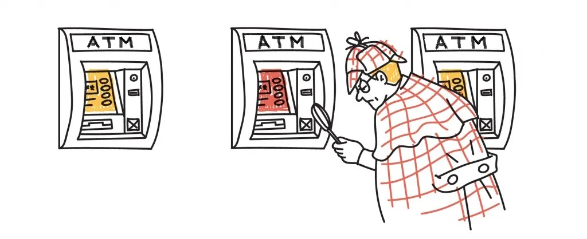
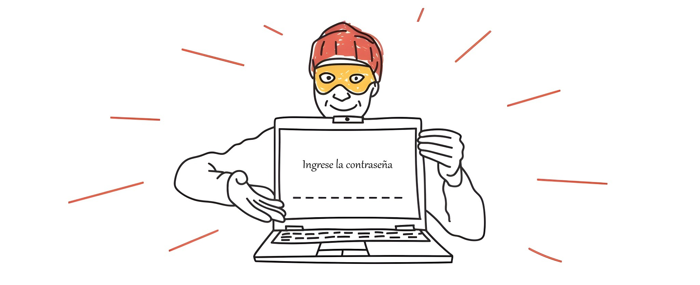

Retiro de dinero de la cuenta sin el conocimiento del propietario, robo de contraseñas y códigos PIN, fácil ganancias en internet y depósitos bajo interés increíble, casinos en línea - todos estos son tipos de fraude financiero. Los criminales especulan sobre sus sentimientos, prometen montañas de oro, se disfrazan como empleados de bancos u organizaciones estatales para atraer dinero. ¿Cómo reconocer a un estafador y qué hacer si te engañaron?
Para utilizar su tarjeta con sus fines, los defraudadores necesitan conocer su número, el nombre del titular, el período de validez, CVC o número CVV. Pueden instalar un skimmer en el ATM (dispositivo especial que se coloca en el receptor de la tarjeta en el ATM) y cámara de vídeo en el teclado.

Número CVC o CVV - tres dígitos situados en el campo de firma del titular de la tarjeta o junto a él.
Es suficiente utilizar un cajero automático y no cubrir la mano del teclado en el momento de introducir el código PIN - y su dinero puede ser retirado, transferido a varias cuentas y cobrado. Robar los datos de su tarjeta puede incluso en un café o tienda. El atacante puede ser un vendedor que tendrá acceso a su tarjeta durante al menos cinco segundos. Después de tomar una foto de su tarjeta, puede usarla para pagos en línea.

Para utilizar su tarjeta con sus fines, los defraudadores necesitan conocer su número, el nombre del titular, el período de validez, CVC o número CVV. Pueden instalar un skimmer en el ATM (dispositivo especial que se coloca en el receptor de la tarjeta en el ATM) y cámara de vídeo en el teclado.
- Antes de retirar dinero en el cajero automático, examinarlo. En el receptor de la tarjeta no debe ser ningún objeto extraño, el teclado no debe tambalearse.
- Cuando recibas un PIN, cubre el teclado con la mano. Haz esto incluso mientras pagas con tarjeta en el café.
- Conectar el banco móvil y SMS-notificaciones.
- Si usted hace compras en línea, no le diga a nadie el código secreto para confirmar las transacciones que se le envía por SMS.
- Trate de no perder nunca de vista su tarjeta.
Ciberfraude

Supongamos que usted siempre retira dinero solo en el cajero de un banco o a través de cajeros automáticos, y la tarjeta no se paga en absoluto. Usted se siente seguro. Puede recibir un mensaje de texto o un correo electrónico del banco con un número de teléfono, pidiendo llamar a un número desconocido o notificando de una gran ganancia inesperada. Puede llamar en nombre del banco y pedir que se le proporcionen datos personales, código PIN de la tarjeta o número de confirmación por SMS. O escribir en las redes sociales en nombre de familiares o amigos que de repente se metieron en problemas (entraron en la policía, chocaron un automóvil, robaron una bolsa) y piden transferir el dinero a una cuenta desconocida. En el 99,9% de los casos se trata con defraudadores. En el otro extremo del cable son los engañadores que quieren atraer a todos los datos que necesitan, y en el otro lado de la pantalla - intrusos que juegan en sus deseos, sentimientos y cuidado de seres queridos.
Por eso, bajo la dirección de las autoridades, hemos desarrollado un software especial que rastrea las llamadas fraudulentas y las notificaciones de SMS de nuestros ciudadanos y protege su dinero de los intrusos. El programa está disponible solo para los usuarios de teléfonos en la plataforma Android y es absolutamente gratis y no tiene cargos adicionales.
Descargar el programa para su teléfono que puede hacer clic en "Descargar" a continuación. Entonces usted tendrá que pulsar "Instalar" y confirmar todas las funciones necesarias que se resaltarán en el teléfono.